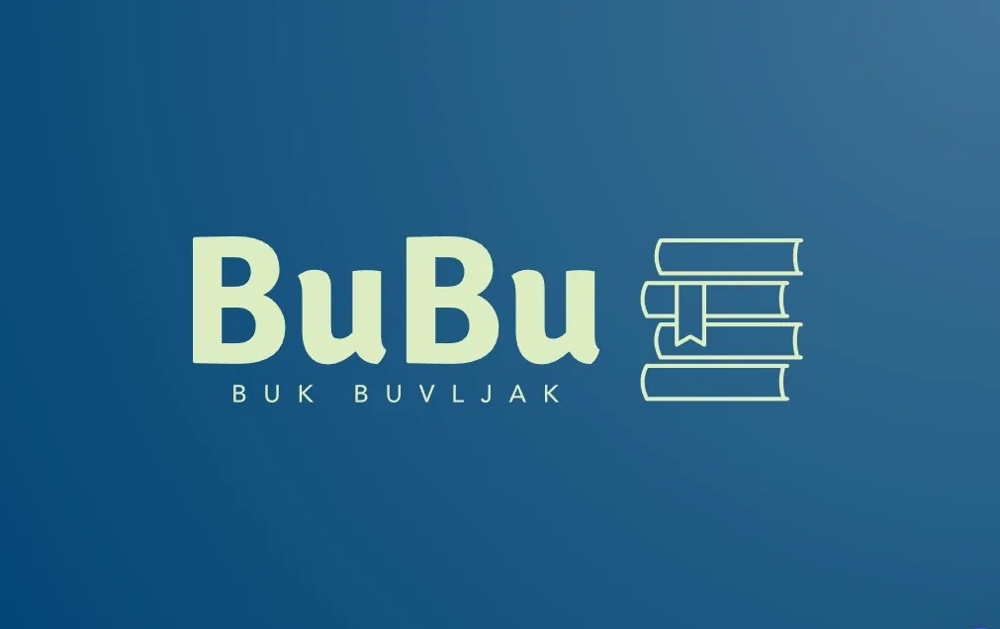

Prvi BuBu (Buk Buvljak) & Božićna radionica
Jučer se u prostorima Speleološkog odsjeka PDS Velebita (Klaićeva 42, Zagreb), održao prvi BuBu (Buk Buvljak) i Božićna radionica za djecu. Cijeli događaj ima veliki humanitarni karakter

Napisao: Edo Vričić
Fotografije: Valentina Plemenčić, Edo Vričić
Jučer se (11. 12. 2024) u prostorima Speleološkog odsjeka PDS Velebita (Klaićeva 42, Zagreb), održao prvi BuBu (Buk Buvljak)!
Kroz nesebične donacije naših članova i prijatelja društva (PDS Velebit), drugih građana, udruga pa čak i izdavačkih kuća, prikupili smo velik broj knjiga (za djecu i odrasle, stručne i nestručne), časopisa, stripova, vodiča i priča te ih ponudili članovima društva, za prikladne donacije. U ‘kasicu’ smo skupili puno novčića, a cijeli prihod od BuBu-a ide za akciju ‘Božićna spuštancija’, koja će se održati 23.12.2024 od 11h. Tada će speleolozi grada Zagreba, a od ove godine i Čakovca, po četvrti put zaredom u predbožićne dane darivati dječicu koja će Božić provesti u bolnicama. A kako? Pa naravno, u onom pomalo ‘funky’ stilu, svojstvenom speleolozima koji su i inicirali tu akciju! Odjeveni u kostime ‘Dedeka i Bakica’ Božićnjaka, spuštati ćemo se sa krovova bolnica i donositi darove djeci, doslovno ‘s neba’ 😊! Više o akciji pročitajte na stranicama Zagrebačkog speleološkog saveza, a ako želite vidjeti kako nam je bilo prošle godine, bacite pogled na foto album na našoj facebook stranici – svi linkovi na dnu teksta. Elem, da se mi vratimo na BuBu!
Sastavni dio jučerašnje priče bila je i Božićna radionica na koju je, sretni smo reći, došla cijela hrpica Velebitaške ‘dječurlije’, a pridružili su nam se i klinci iz Udruge Suncokret. Svi zajedno (baš kako to inače rade speleolozi!) izrađivali su božićne čestitke za klince i osoblje u bolnicama, koje će uručivati spomenuti ‘Dedeki i Bakice’ iz gornjeg dijela teksta (‘Spuštancija’). Na taj način i naši najmlađi su dobili priliku sudjelovati u ovoj hvalevrijednoj humanitarnoj akciji (23.12.24), a mi ‘odrasli’ (uvjetno rečeno 😊 ) dobili smo priliku vidjeti da je Louis Armstrong ipak imao pravo kad je otpjevao ‘Wonderful world’! Jer, kad vidiš svu ovu ciku i viku onih najmlađih u prostorima društva, kako rade nešto za druge, dijele svoju kreativu, energiju, želju za druženjem, upoznavanjem i doživljavanjem novih iskustava,, čak i svirke, znaš da je naša budućnost svjetla!
A što se tiče čestitki, pogledajte u foto-albumu i procijenite sami, al’ mi mislimo da su predivne! I da će uveseliti dane njihovih vršnjaka koji se svakodnevno bore sa izazovima puno težim od silaska u najdublje jame ili uspona na najviše vrhunce. Veselimo se ‘Božićnoj spuštanciji’ 23.12., a do tada zahvaljujemo:
- Svim Velebitašima/icama i prijateljima društva, koji su sudjelovali doniranjem knjiga ili donacijama za knjige, a posebice našima najmlađima, na kreativnim i toplim božićnim četitkama za njihove vršnjake i osoblje bolnica
- Udrugama Suncokret i SWIMIGYM, koje su podržale akciju materijalima za Božićnu radionicu te spuštanciju, a svakako i kroz svoju kreativnu snagu!
- Izdavačkoj kući Libricon, koja je obogatila naš ‘Buvljak’ donacijama vrlo vrijedne literature na temu planinarstva, alpinizma i boravka u prirodi!
- Velebitaškim ‘kreativkama’ koje su vodile djecu na Božićnoj radionici, kao i svima koji su se uključili neplanirano, iz čistog poleta! Hvala i onima koji su educirali dječicu na temu geologije ili pak sviranja gitare i bubnjića – nek’ nam budućnost bila ispunjena znanošću i svirkom!
Svi vi zajedno omogućili ste da se prvi BuBu ostvari! Hvala! A uskoro ćemo objaviti i što smo lijepog kupili za dječicu od prikupljenih donacija 😊 !
BuBu & prijatelji
Info o 'Božićnoj spuštanciji':
Zagrebački spelološki savez (ZSS)
'Božićna spuštancija prosinac 2023'
Za kraj, još jedno veliko hvala na podršci svim članovima, prijateljima društva i građanima koji su donirali, uz poseban pozdrav za: